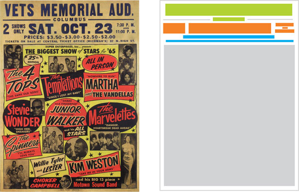
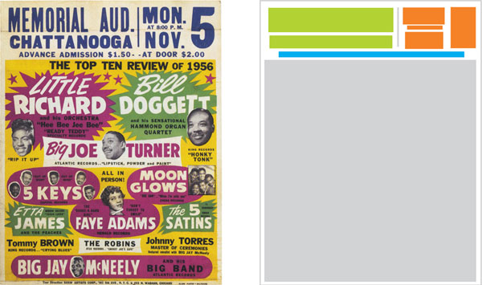

IMPRINT STYLES
COMPOSITION ANALYSIS
LETTERING STUDY
Globe’s lean and direct imprints embody the philosophy of the shop—be visible and communicate. Globe created and maintained two primary imprint styles: the horizontal imprint stretching from side to side and the two-column imprint terminating in a large, memorable numeral.
Globe minimized imprinting enticement language, rarely used redundant time indications like “nite” and rarely indicated the state, when the name of the city would do. They used abbreviations for days and months and excluded unneeded suffixes for dates (-st, -nd, -rd and -th). This relentless pruning resulted in extra space that could comfortably support larger type and therefore be more legible from a distance.
HORIZONTAL IMPRINT

2 COLUMN IMRINT
